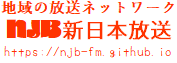
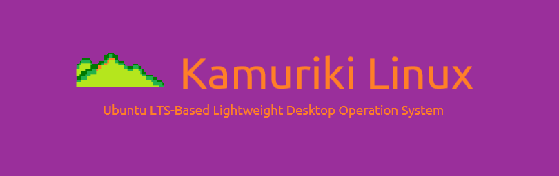

|
 |
新日本放送は、長野県千曲市にてミニFM放送、OSやゲームなどのソフトウェア開発を行なっている同人団体です。 活動を通して地域の活性化に貢献する事が、我々の願いです。 |
|
NJBの局情報とか 歴史とかを総まとめ。 |
これからミニFMを 始めたい方必見！ |
公式掲示板。 ネタバレは禁止！！ |
NJBや姉妹ブランドの 最新情報をお届け |
| What's New |
|
2024/01/23 本年7月より、NJBは名称を「中村ジュークボックス」に変更し、音楽及びコンピュータソフトウェアに特化したサークルに生まれ変わります。それに伴い現在実施しているミニFM放送は3月をもって終了と致します。 |
|
2023/11/22 インターネット上で「MXOG」なるLinuxディストロ開発プロジェクトとNJBが関係あるとの書き込みを見かけますが、現在NJBとは全く関係がありません。また各プロジェクトへの誹謗中傷は断固反対の立場です。 |
|
2023/10/17 新しいスローガン「明日の自分が、全部やる。」を制定しました。 |
|
2023/07/09 Misskeyにアカウントを作成しました。 @radionewjapan@misskey.io フォローお待ちしています。 |
|
2023/07/06 今後数週間以内にMisskeyかMastodonにSNSアカウントを移行します。 移行の2週間後にTwitterアカウントを削除します。 移行先は追ってお伝えします。 |
|
2023/06/17 Univalentのページを移転しました。 移転先はアットウィキです。 |
|
2023/05/13 本日21時より放送内容を大幅に変更します。 |
|
2022/10/01 YouTubeにて麻浪迅のオリジナル楽曲「Alma」の短縮版を公開しました。 試聴はこちら→https://www.youtube.com/watch?v=WpA5Fa24zR0 |
|
2022/09/10 旧ホームページからの移転作業を開始しました。 内容はこれから増強するので待っててね。 |
|
パソコン向けOS NJBではGNU/Linux-rtの開発も行なっております。ぜひ試してみてね。 |
|  | |
|
↑日本で5番目のArch系ディストロ↑ 「Univalent」のダウンロードはこちらから |
↑Wind〇ws95みたいなDebian系↑ 「Kamuriki」も宜しくね。Wine付き！ |